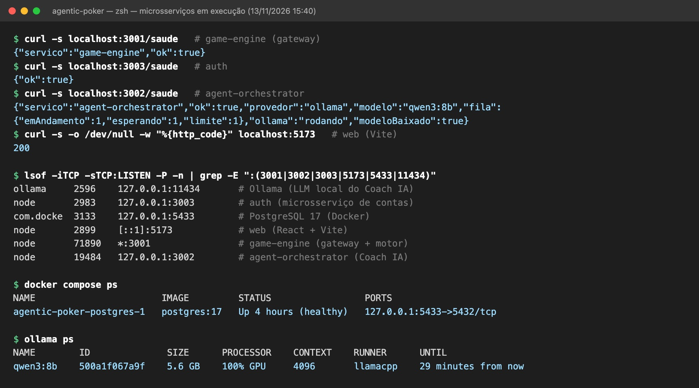
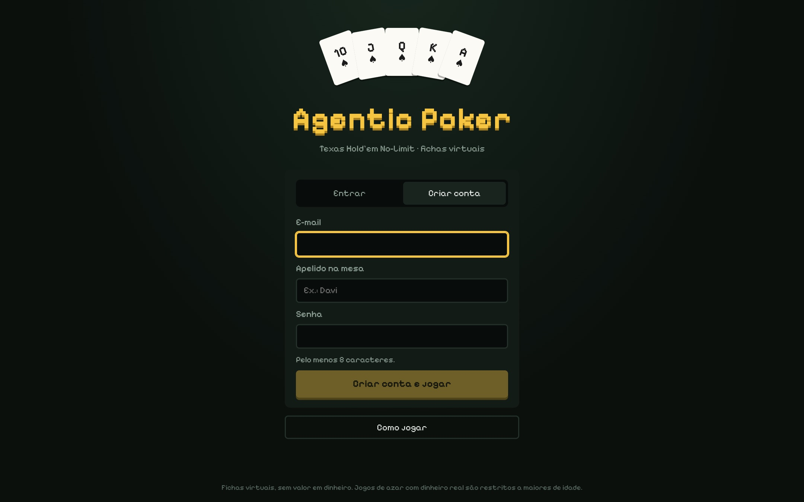
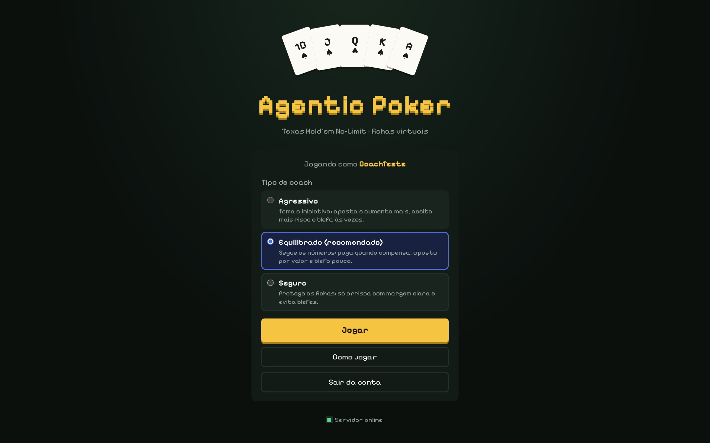
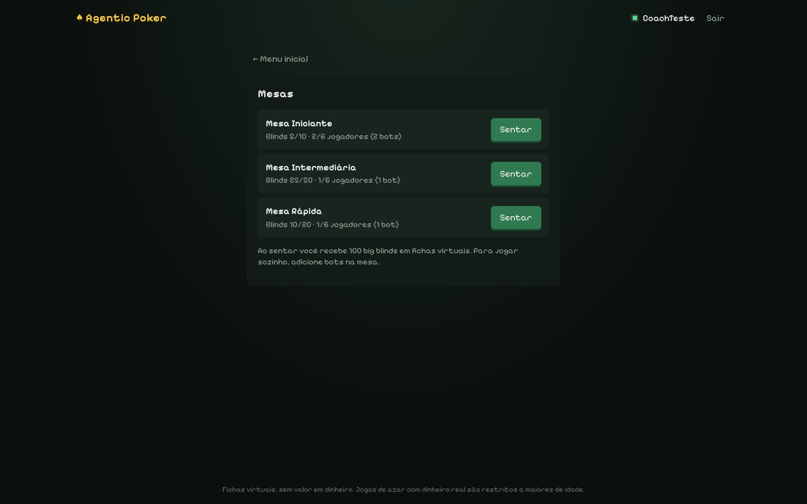
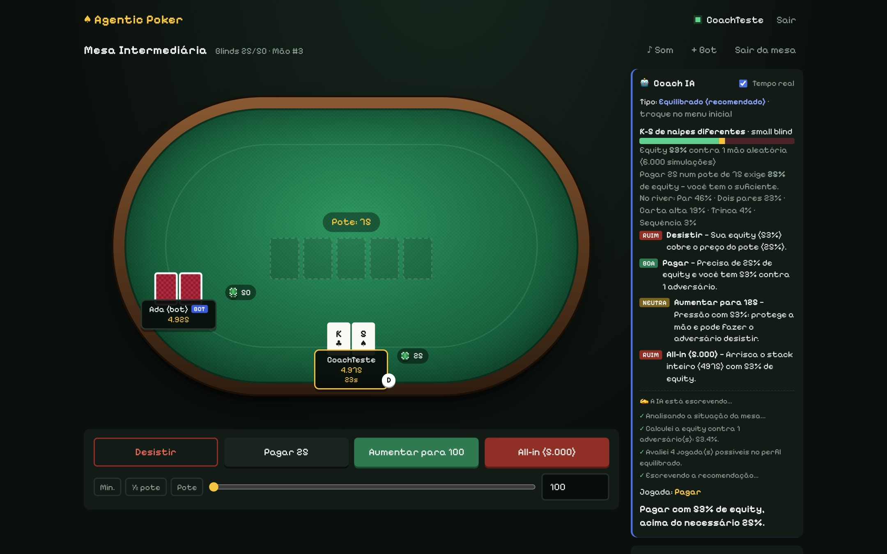
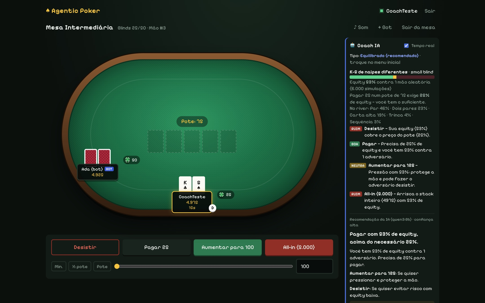
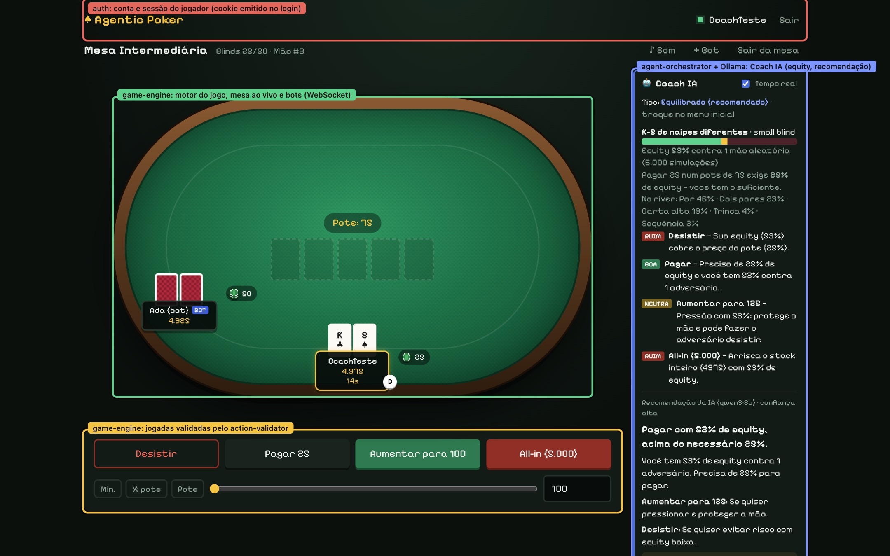
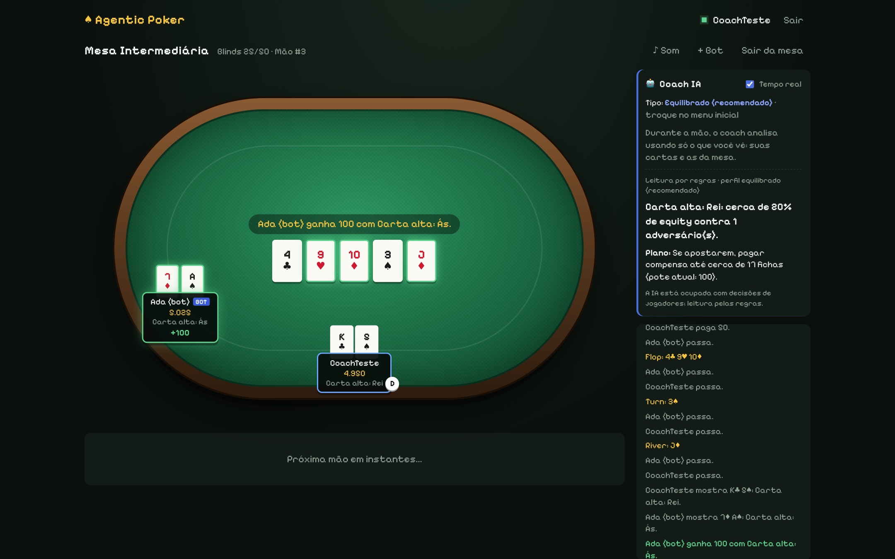
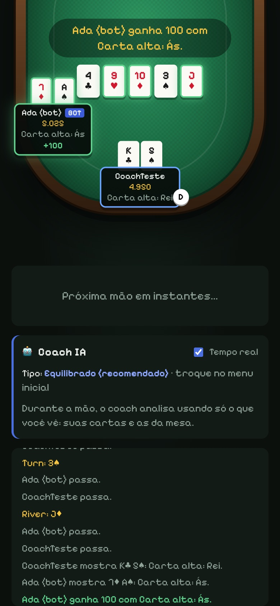

Agentic Poker
feat/sprint-1 (README na raiz do repositório)Desenvolver um jogo digital de poker Texas Hold'em No-Limit, não violento e jogado apenas com fichas virtuais, sem valor em dinheiro. O sistema deve ser construído com microsserviços e componentes de software como técnicas de reuso, seguindo a metodologia ágil Scrum. Um agente de IA agêntica, o Coach IA, analisa a situação do jogador em tempo real e recomenda jogadas. Para isso, usa apenas as informações que o próprio jogador vê na tela: as cartas dele, as cartas da mesa, os stacks, as apostas e o histórico público da mão.
Uma mão completa roda de ponta a ponta entre jogadores e bots, com regras corretas (side pots, empates e all-ins incompletos). Cada microsserviço aparece em execução e tem o contrato de API documentado. O Coach IA nunca recebe cartas ocultas.
| Requisito | Como foi atendido |
|---|---|
| Servidor autoritativo | O estado da mão só existe no game-engine. Cada jogador recebe uma visão filtrada da mesa: cartas dos adversários só aparecem quando reveladas no showdown, e o baralho nunca sai do servidor. |
| Embaralhamento seguro | O baralho usa Fisher-Yates com RNG criptográfico (crypto.randomInt), no componente deck. |
| Regras testadas | Há 287 testes automatizados (Vitest), incluindo testes baseados em propriedades (fast-check) para o avaliador de mãos, os side pots e o validador de ações. |
| IA sem trapaça | O agent-orchestrator recebe exatamente a visão que o jogador vê; por construção, não tem acesso às cartas ocultas. |
| Disponibilidade do Coach | Se a IA estiver ocupada, lenta ou fora do ar, o coach responde por regras determinísticas e nunca deixa o jogador sem resposta. |
| Segurança de contas | Senhas com hash scrypt; sessão em JWT HS256 dentro de um cookie httpOnly e SameSite=Lax; limite de tentativas de login. |
| Ética | Fichas apenas virtuais, aviso de idade, bots sempre identificados e nenhuma mecânica de compra de fichas. |
O projeto segue Scrum com sprints curtas. Cada sprint termina numa fatia jogável (vertical slice): algo que dá para abrir no navegador e jogar. Entregar algo jogável cedo valida o motor de poker e a arquitetura antes de o sistema crescer. Para bugs e tarefas de operação, usa-se um quadro Kanban à parte, sem esperar a próxima sprint.
| Papel | Responsabilidade neste projeto |
|---|---|
| Product Owner | Mantém o Product Backlog (histórias H1 a H12) priorizado pelo valor para o jogador e pelo critério de sucesso do enunciado. |
| Scrum Master | Garante os eventos, remove impedimentos (por exemplo, a troca da IA paga por uma IA local e gratuita) e cuida da definição de pronto. |
| Time de desenvolvimento | Implementa, testa e demonstra as histórias da sprint. Desenvolvimento assistido por IA (Claude Code) foi usado como ferramenta de produtividade, sempre com revisão e testes. |
pnpm typecheck).pnpm test).pnpm lint, pnpm format:check)./saude e logs estruturados em JSON.O reuso combina duas técnicas complementares:
packages/, são publicadas no monorepo como pacotes @poker/* e são importadas por vários serviços e pelo cliente.services/ (e o cliente em apps/web) e são reaproveitados por meio de suas APIs (HTTP, NDJSON e WebSocket).| Componente | Responsabilidade (interface principal) | Reusado por |
|---|---|---|
shared-types | Tipos e contratos compartilhados: Carta, Acao, VisaoDaMesa, eventos do Socket.IO (EventosDoCliente / EventosDoServidor), tipos do Coach e o leitor de linhas NDJSON lerLinhas. | Todos os serviços, todos os componentes e o cliente web |
deck | Baralho de 52 cartas e embaralhamento Fisher-Yates com RNG criptográfico (embaralhar, baralhoEmbaralhado, distribuir). | game-engine |
hand-evaluator | Melhor mão de 5 entre 5–7 cartas, desempates e vencedores (avaliarMao, vencedores, descreverMao). | game-engine (showdown e bots), equity, agent-orchestrator |
action-validator | Regras de aposta do No-Limit: ações permitidas, aumento mínimo, all-in incompleto que não reabre a ação (acoesPermitidas, validarAcao). | game-engine (motor) |
equity | Equity por simulação Monte Carlo usando só as cartas visíveis (calcularEquity, equityNecessaria). | agent-orchestrator (Coach IA) |
sessao | Sessão do jogador: emissão e verificação de JWT HS256 e leitura do cookie (assinarSessao, verificarSessao, lerSessaoDoCookie). | auth (emite) e game-engine (verifica) |
| Microsserviço | Responsabilidade | Interface |
|---|---|---|
game-engine (:3001) | API Gateway (porta de entrada única), lobby, mesas ao vivo, motor de regras autoritativo e bots. | HTTP e WebSocket (Socket.IO) |
auth (:3003) | Cadastro, login, logout e “quem sou eu”; contas no PostgreSQL. | HTTP/JSON /api/auth/* |
agent-orchestrator (:3002) | Hospeda os agentes de IA do Coach: análise numérica, recomendação, leitura da mão e fila da IA. | HTTP/JSON e NDJSON (streaming) |
web (:5173 em dev) | Cliente React: telas de acesso, menu, lobby, mesa e painel do Coach. | Navegador |
Serviços de infraestrutura reaproveitados como estão: PostgreSQL 17 (em Docker), usado pelo auth, e Ollama, que serve o modelo de linguagem local qwen3:8b para o Coach. Opcionalmente, a API da Anthropic (Claude) pode ser usada no lugar do Ollama.
hand-evaluator é escrito e testado uma vez e usado em três lugares: no showdown do motor, na força da mão dos bots e dentro do componente equity, que por sua vez é usado pelo Coach. Já o microsserviço agent-orchestrator é reaproveitado por meio da API: o game-engine não sabe se do outro lado há Ollama, Claude ou só regras.O plano inicial previa seis sprints, cada uma acrescentando microsserviços (seção 5). O desenvolvimento começou pela base reutilizável: primeiro os componentes, depois os serviços que os usam. Assim, cada serviço novo já nasceu sobre peças testadas. Durante a Sprint 1, o time puxou para frente histórias de prioridade média (bots e Coach IA), porque o motor e os componentes ficaram prontos antes do previsto e a revisão com playtest mostrou que o Coach era o diferencial do produto. Essa repriorização é registrada no backlog.
151b4f2)Monorepo com pnpm workspaces, TypeScript estrito com project references, Vitest, ESLint, Prettier e CI no GitHub Actions desde o primeiro dia. Cada pacote exporta a condição @poker/source, que permite rodar o código-fonte direto em desenvolvimento, sem compilar os componentes antes. Essa decisão de reuso baratea a criação de componentes novos.
Em ordem de dependência: shared-types (cartas, ações e notação), deck (Fisher-Yates com RNG criptográfico), hand-evaluator (avaliador próprio, comparado em testes contra a biblioteca de referência pokersolver) e action-validator (regras de aposta, incluindo o caso clássico do all-in incompleto). Cada componente tem testes baseados em propriedades. Exemplo: “embaralhar nunca perde nem duplica cartas” e “a soma dos potes é igual ao total apostado”.
71bb722)O game-engine compõe os componentes num motor puro, uma máquina de estados (estado, ação) → estado sem rede nem relógio, o que o torna trivial de testar. Por cima do motor vêm a MesaAoVivo (timers da vez, bots, entre mãos), o Lobby com três mesas e o servidor Socket.IO, que envia a cada jogador a sua visão. O cliente React reaproveita os tipos de shared-types, então cliente e servidor compartilham o mesmo contrato e o compilador acusa qualquer divergência.
Novo microsserviço que reaproveita os componentes equity e hand-evaluator como ferramentas do agente. A primeira versão usava a API da Anthropic (Claude). Na revisão surgiu o impedimento do custo, e o provedor passou a ser escolhido por configuração: Ollama com um modelo local e gratuito (qwen3:8b) por padrão, Claude como opção e “só regras” como último recurso. Como o contrato do microsserviço não mudou, o game-engine não precisou de nenhuma alteração. A retrospectiva levou a medições de latência e a três otimizações: menos rodadas do agente, saída estruturada e confiança calculada pelos números. O tempo caiu de 22–30 s para 11–15 s.
Microsserviço auth com banco próprio (PostgreSQL em Docker) e migrações versionadas. A sessão virou um componente (sessao) reusado por dois serviços: o auth emite o token e o game-engine apenas o verifica, sem consultar o banco. Esse é o padrão database per service na prática.
29f00b5 e seguintes)Três perfis de coach (agressivo, equilibrado e seguro), cada um com seus limites numéricos. Leitura da mão em tempo real a cada carta nova. Streaming do texto da IA: o Ollama gera tokens, o orquestrador repassa o progresso em NDJSON, o game-engine emite coach:escrevendo e o jogador vê o texto sendo escrito na lateral da tela (as primeiras palavras aparecem em cerca de 5 s). Para isso foi criado mais um utilitário reutilizável em shared-types: o leitor de linhas NDJSON lerLinhas, usado pelo orquestrador (ao ler o Ollama) e pelo game-engine (ao ler o orquestrador).
| Indicador | Valor |
|---|---|
| Componentes de software | 6 pacotes em packages/ |
| Microsserviços próprios | 3 serviços + 1 cliente web (mais PostgreSQL e Ollama como infraestrutura) |
| Testes automatizados | 287 testes em 25 arquivos, todos passando |
| Código-fonte | cerca de 9.400 linhas de TypeScript (sem contar testes) |
| Latência do Coach (Ollama, Mac M-series) | números instantâneos; primeiras palavras em ~5 s; recomendação completa em 11–15 s |
O backlog está ordenado por prioridade, com o estado ao fim da Sprint 1. As histórias H6 e H8 foram puxadas para frente na revisão (ver seção 4).
| ID | História de usuário | Prioridade | Sprint | Estado |
|---|---|---|---|---|
| H1 | Como jogador, quero jogar uma mão completa de Hold'em com regras corretas. | Alta | 1 | Feito: motor puro, side pots, empates |
| H2 | Como jogador, quero criar uma conta e entrar no jogo. | Alta | 1 | Feito: auth + PostgreSQL |
| H3 | Como jogador, quero entrar numa mesa de 2 a 6 jogadores e ver o jogo em tempo real. | Alta | 2 | Feito: lobby + Socket.IO |
| H4 | Como jogador, quero ver Cartas, Fichas e Mesa de forma clara e acessível. | Alta | 2 | Feito: layout responsivo, papéis ARIA, menos movimento |
| H5 | Como jogador, quero uma carteira de fichas virtuais com saldo confiável. | Alta | 3 | Pendente: hoje as fichas valem por sessão de mesa |
| H6 | Como jogador, quero jogar contra bots identificados como bots. | Média | 4 → 1 | Parcial: bot por regras, com selo BOT; versão Monte Carlo pendente |
| H7 | Como jogador, quero que me recomendem mesas do meu nível. | Média | 5 | Pendente |
| H8 | Como jogador, quero um coach que explique minhas jogadas. | Média | 5 → 1 | Feito: Coach IA com 3 perfis, ao vivo |
| H9 | Como jogador, quero um chat sem toxicidade. | Média | 5 | Pendente |
| H10 | Como jogador, quero rever o histórico das minhas mãos. | Baixa | 6 | Parcial: histórico da mão atual na tela |
| H11 | Como administrador, quero detectar conluio e bots não declarados. | Baixa | 6 | Pendente |
| H12 | Como equipe, queremos ver todos os microsserviços em execução e a API documentada. | Média | 6 | Parcial: /saude em todos os serviços, contratos tipados e documentados neste relatório |
| Sprint | Tarefas | Critério de aceite |
|---|---|---|
| 1 | Avaliador de mãos, baralho seguro, validador de ações, Game Engine, Gateway/Auth mínimo, CI. Puxadas para frente: lobby e mesa por WebSocket, cliente React, bot simples, agent-orchestrator com equity e Coach IA (Claude/Ollama/regras), auth com PostgreSQL, perfis do coach e escrita ao vivo. | Uma mão completa roda nos testes, incluindo side pots e empates. Atingido, e o jogo já é jogável no navegador. |
| 2 | Lobby e mesa via WebSocket, SDK do cliente, componentes de UI. A maior parte foi antecipada na Sprint 1. Resta extrair o SDK do cliente como componente. | Dois navegadores jogam a mesma mão em tempo real. |
| 3 | Wallet com ledger, eventos no barramento, contratos em shared-types. | Saldos fecham após cada mão, sem divergência. |
| 4 | Bot por Monte Carlo atrás do Agent Orchestrator (a calculadora de equity já existe). | Um bot joga uma mão inteira e aparece como bot. |
| 5 | Recommendation de mesas, agente narrador, Chat & Moderação. | A mesa recomendada aparece no lobby com o motivo; o chat bloqueia mensagens fora da política. |
| 6 | Replay/Analytics, anti-fraude, testes de carga, painel de serviços, README, vídeo. | Todos os serviços sobem com docker compose up e passam nos testes de carga. |
| Tarefa | Onde | Resultado |
|---|---|---|
| Configurar monorepo, TS, lint, testes e CI | raiz, .github/workflows | Feito |
| Tipos compartilhados e notação de cartas | packages/shared-types | Feito |
| Baralho seguro (Fisher-Yates + crypto) | packages/deck | Feito |
| Avaliador de mãos e desempates | packages/hand-evaluator | Feito, validado contra o pokersolver |
| Validador de ações No-Limit | packages/action-validator | Feito |
| Motor da mão + side pots | services/game-engine/src/motor | Feito |
| Mesa ao vivo, lobby, bots, servidor Socket.IO | services/game-engine/src | Feito |
| Cliente web (acesso, menu, lobby, mesa) | apps/web | Feito |
| Calculadora de equity Monte Carlo | packages/equity | Feito |
| Agent Orchestrator + Coach IA (3 provedores) | services/agent-orchestrator | Feito |
| Contas com PostgreSQL e sessão JWT | services/auth, packages/sessao | Feito |
| Perfis do coach e escrita ao vivo (streaming) | orchestrator, game-engine, web | Feito |
O navegador fala com um único ponto de entrada, o API Gateway embutido no game-engine. As rotas de conta são repassadas ao auth, que é o único serviço com acesso ao PostgreSQL. As jogadas trafegam por WebSocket até o motor autoritativo. Para o Coach, o game-engine envia ao agent-orchestrator a mesma visão filtrada que o jogador recebe. O orquestrador escuta só em 127.0.0.1, então não é acessível de fora. Os componentes de packages/ são importados como bibliotecas, não chamados pela rede.
coach:pedir pelo WebSocket com o modo (decisão ou leitura) e o perfil.POST /coach/analise: os números (equity e pot odds) voltam em milissegundos e aparecem na hora (coach:analise).POST /coach/recomendacao com accept: application/x-ndjson: cada linha de progresso vira um evento coach:escrevendo e a última linha traz a recomendação validada (coach:recomendacao).mesa:acao. O motor a valida com o action-validator, aplica, e cada jogador recebe sua nova visão (mesa:estado).| Padrão | Onde |
|---|---|
| API Gateway | game-engine é a porta única: roteia /api/auth, WebSocket e arquivos do cliente (seção 6.2). |
| Database per service | Só o auth acessa o PostgreSQL; o game-engine confia no token assinado. |
| Access token | JWT HS256 no cookie, verificado no gateway sem consultar o banco. |
| Circuit breaker / fallback | O orquestrador tem prazo por pedido; se falhar, responde pelo coach por regras. |
| Bulkhead (fila) | FilaDaIA limita a concorrência no modelo local e recusa na hora quando a fila enche. |
| Health check | GET /saude em todos os serviços (seção 6.5). |
| Log estruturado | Cada recomendação gera uma linha JSON com provedor, perfil, tempo, tokens e fila. |
O gateway fica no processo do game-engine. Ele resolve quatro coisas: (1) repassa /api/auth/* ao microsserviço auth; (2) responde /saude; (3) serve os arquivos do cliente compilado; (4) aceita o WebSocket somente com sessão válida. Em desenvolvimento, o papel de roteamento HTTP é feito pelo proxy do Vite, com as mesmas rotas.
services/game-engine/src/servidor/main.ts — roteamento HTTP e autenticação do WebSocket
const servirEstaticos = criarServidorDeEstaticos(PASTA_WEB);
const repassarAoAuth = criarProxyDoAuth(URL_DO_AUTH);
const http = createServer((req, res) => {
if (req.url?.startsWith('/api/auth/')) return repassarAoAuth(req, res);
if (req.url === '/saude') {
res.writeHead(200, { 'content-type': 'application/json' });
res.end(JSON.stringify({ servico: 'game-engine', ok: true }));
return;
}
servirEstaticos(req, res).catch(() => res.writeHead(500).end());
});
const io = new Server<EventosDoCliente, EventosDoServidor, Record<string, never>, DadosDoSocket>(
http,
);
// Só entra quem tem sessão válida (cookie emitido pelo serviço auth no login).
io.use((conexao, seguir) => {
const identificacao = identificacaoDoCookie(conexao.handshake.headers.cookie, SEGREDO_DA_SESSAO);
if (!identificacao) return seguir(new Error('nao-autenticado'));
conexao.data = { ...identificacao, mesaId: null };
seguir();
});
services/game-engine/src/servidor/proxy-auth.ts — proxy reverso para o serviço auth
/** * Em produção (`pnpm start`) a interface é servida pelo game-engine, então ele repassa * /api/auth/* para o serviço auth. Em desenvolvimento quem faz isso é o Vite. */ import { request, type IncomingMessage, type ServerResponse } from 'node:http'; export function criarProxyDoAuth(urlDoAuth: string) { const destino = new URL(urlDoAuth); return (req: IncomingMessage, res: ServerResponse): void => { const pedido = request( { hostname: destino.hostname, port: destino.port, path: req.url, method: req.method, headers: { ...req.headers, host: destino.host, // Substitui (não acrescenta): o cliente não consegue forjar o próprio IP. 'x-forwarded-for': req.socket.remoteAddress ?? '', }, timeout: 10_000, }, (resposta) => { res.writeHead(resposta.statusCode ?? 502, resposta.headers); resposta.pipe(res); }, ); pedido.on('timeout', () => pedido.destroy(new Error('timeout'))); pedido.on('error', () => { if (res.headersSent) return void res.end(); res.writeHead(502, { 'content-type': 'application/json; charset=utf-8' }); res.end(JSON.stringify({ ok: false, motivo: 'Serviço de contas fora do ar.' })); }); req.pipe(pedido); }; }
apps/web/vite.config.ts — as mesmas rotas em desenvolvimento
server: {
port: 5173,
// Em desenvolvimento, o Vite repassa o WebSocket ao servidor do jogo e /api/auth ao auth.
proxy: {
'/api/auth': {
target: `http://127.0.0.1:${process.env.AUTH_PORT ?? 3003}`,
xfwd: true,
},
'/socket.io': {
target: `http://localhost:${process.env.GAME_ENGINE_PORT ?? 3001}`,
ws: true,
},
},
},
});
| Rota / evento | Destino | Descrição |
|---|---|---|
POST /api/auth/cadastro | auth | { email, apelido, senha } → cria a conta e emite o cookie de sessão. |
POST /api/auth/login | auth | { email, senha } → emite o cookie. |
POST /api/auth/logout | auth | Apaga o cookie. |
GET /api/auth/eu | auth | Usuário logado (sem o hash da senha). |
GET /saude | game-engine | { servico, ok } |
/socket.io | game-engine | WebSocket do jogo; recusa com nao-autenticado sem cookie válido. |
GET /* | game-engine | Arquivos estáticos do cliente (apps/web/dist). |
Responsabilidade: único dono do estado das mesas e das mãos. Interface: WebSocket com eventos tipados em shared-types. Dados: em memória, já que o estado de uma mão dura segundos; o ledger persistente está planejado no serviço Wallet. Componentes usados: deck, hand-evaluator, action-validator, sessao, shared-types.
packages/shared-types/src/protocolo.ts — contrato WebSocket (AsyncAPI simplificado, em tipos)
export interface EventosDoServidor {
'lobby:mesas': (mesas: ResumoDaMesa[]) => void;
'mesa:estado': (visao: VisaoDaMesa | null) => void;
/** Números do coach: chegam rápido, sem IA. */
'coach:analise': (analise: AnaliseDoCoach) => void;
/** Recomendação do agente: chega depois (a IA leva alguns segundos). */
'coach:recomendacao': (recomendacao: RecomendacaoDoCoach) => void;
/** Comentário da IA sobre a mão atual, a cada nova etapa. */
'coach:leitura': (leitura: LeituraDoCoach) => void;
/** A IA escrevendo ao vivo: passos do agente e texto parcial, antes da resposta final. */
'coach:escrevendo': (escrita: EscritaDoCoach) => void;
}
export interface EventosDoCliente {
'mesa:entrar': (dados: { mesaId: string }, responder: (r: Resposta) => void) => void;
'mesa:sair': (responder: (r: Resposta) => void) => void;
'mesa:adicionar-bot': (responder: (r: Resposta) => void) => void;
'mesa:acao': (acao: Acao, responder: (r: Resposta) => void) => void;
/** Pede ao Coach IA uma análise da situação atual do jogador, no modo e perfil dados. */
'coach:pedir': (pedido: PedidoAoCoach, responder: (r: Resposta) => void) => void;
}
services/game-engine/src/motor/mao.ts — motor puro: valida e aplica uma ação
/** * Máquina de estados de uma mão de Texas Hold'em No-Limit. * * Funções puras: recebem um estado e devolvem um estado novo, sem alterar o anterior, * sem rede, sem relógio. Toda regra do jogo mora aqui; quem chama (a mesa ao vivo, * os testes, um bot de playtest) só escolhe as ações. * * iniciarMao → blinds, 2 cartas para cada um, primeira vez de agir * aplicarAcao → valida, aplica, passa a vez, abre flop/turn/river, faz o showdown */
export function aplicarAcao(estado: EstadoDaMao, jogadorId: string, acao: Acao): ResultadoDaJogada {
if (estado.fase === 'encerrada' || estado.vez === null) {
return { ok: false, motivo: 'A mão já terminou.' };
}
const vez = estado.vez;
if ((estado.jogadores[vez] as JogadorNaMao).id !== jogadorId) {
return { ok: false, motivo: 'Não é a sua vez.' };
}
const validacao = validarAcao(situacaoDeAposta(estado, vez), acao);
if (!validacao.valida) return { ok: false, motivo: validacao.motivo };
const efeito = validacao.efeito;
const e = copiar(estado);
const j = e.jogadores[vez] as JogadorMutavel;
j.stack -= efeito.fichasColocadas;
j.apostaNaRodada = efeito.apostaTotal;
j.totalApostado += efeito.fichasColocadas;
j.jaAgiu = true;
j.apostaQuandoAgiu = efeito.novaMaiorAposta;
if (efeito.tipo === 'desistir') j.situacao = 'desistiu';
else if (efeito.allIn) j.situacao = 'all-in';
// Aumento completo: todo mundo que ainda tem fichas volta a precisar agir.
if (efeito.reabreAcao) {
for (const outro of e.jogadores)
if (outro !== j && outro.situacao === 'ativo') outro.jaAgiu = false;
}
e.maiorAposta = efeito.novaMaiorAposta;
e.aumentoMinimo = efeito.novoAumentoMinimo;
…
services/game-engine/src/motor/potes.ts — divisão em pote principal e side pots
/** * Divide as fichas apostadas em pote principal e side pots. * * Quando alguém vai all-in com menos fichas que os outros, só pode ganhar de cada * adversário o mesmo tanto que apostou. Para isso, os potes são cortados nos níveis de * aposta de quem continua na mão: * * A all-in com 100, B all-in com 300, C apostou 300: * - pote principal: 100 de cada = 300, disputado por A, B e C; * - side pot: mais 200 de B e C = 400, disputado só por B e C. * * Fichas de quem desistiu entram nos potes, mas essa pessoa não é elegível. * Um pote com um elegível só é o excedente de uma aposta que ninguém pagou: volta para ele. */ export function calcularPotes(jogadores: readonly JogadorNaMao[]): Pote[] { const naMao = jogadores.filter((j) => j.situacao !== 'desistiu'); const niveis = [...new Set(naMao.map((j) => j.totalApostado))] .filter((n) => n > 0) .sort((a, b) => a - b); const potes: { valor: Fichas; elegiveis: string[] }[] = []; let anterior = 0; for (const nivel of niveis) { const valor = jogadores.reduce( (soma, j) => soma + Math.min(j.totalApostado, nivel) - Math.min(j.totalApostado, anterior), 0, ); const elegiveis = naMao.filter((j) => j.totalApostado >= nivel).map((j) => j.id); if (valor > 0) potes.push({ valor, elegiveis }); anterior = nivel; } …
services/game-engine/src/mesa/visao.ts — o que UM jogador pode ver (segurança do servidor autoritativo)
/** * Monta o que UM jogador pode ver da mesa. É aqui que o servidor autoritativo protege a * informação secreta: cartas dos adversários só aparecem quando reveladas no showdown, e * o baralho nunca sai do servidor. */
export function montarVisao(m: InstantaneoDaMesa, quemVe: string | null): VisaoDaMesa {
const { mao } = m;
const emAndamento = mao !== null && mao.fase !== 'encerrada';
const reveladas = mao?.resultado?.maosReveladas ?? {};
const jogadores: JogadorVisivel[] = m.assentos.flatMap((a, assento) => {
if (!a) return [];
const naMao = mao?.jogadores.find((j) => j.id === a.id);
const podeVerCartas = naMao !== undefined && (a.id === quemVe || a.id in reveladas);
return [
{
id: a.id,
nome: a.nome,
assento,
stack: naMao ? naMao.stack : a.stack,
apostaNaRodada: naMao && emAndamento ? naMao.apostaNaRodada : 0,
situacao: naMao ? naMao.situacao : 'aguardando',
ehBot: a.ehBot,
conectado: a.conectado,
cartas: podeVerCartas ? naMao.cartas : null,
quantidadeDeCartas: naMao && naMao.situacao !== 'desistiu' ? naMao.cartas.length : 0,
ehBotao: assento === m.assentoDoBotao,
},
];
});
…
services/game-engine/src/servidor/coach.ts — ponte com o agent-orchestrator (leitura do NDJSON)
/** * Ponte entre o servidor do jogo e o microsserviço Agent Orchestrator. * * O jogo envia ao orquestrador a MESMA visão filtrada que o jogador recebe na tela. * Assim, por construção, o coach não tem acesso a cartas ocultas nem ao baralho. */
/** * Pede ao orquestrador. Com `aoEscrever`, pede a resposta AO VIVO (NDJSON): cada linha de * progresso (passos do agente, texto parcial) vai para `aoEscrever`, e a última traz a * resposta final. */ async function pedir<T>( rota: string, visao: VisaoDaMesa, perfil: PerfilDoCoach, prazoMs: number, aoEscrever?: (escrita: EscritaDoCoach) => void, ): Promise<Resultado<T>> { try { const resposta = await fetch(`${URL_DO_ORQUESTRADOR}${rota}`, { method: 'POST', headers: { 'content-type': 'application/json', ...(aoEscrever && { accept: 'application/x-ndjson' }), }, body: JSON.stringify({ visao, perfil }), signal: AbortSignal.timeout(prazoMs), }); const aoVivo = (resposta.headers.get('content-type') ?? '').includes('ndjson'); if (!resposta.ok || !aoVivo || !resposta.body) { const corpo = (await resposta.json()) as T & { motivo?: string }; return resposta.ok ? { ok: true, dados: corpo } : { ok: false, motivo: corpo.motivo ?? 'Coach indisponível.' }; } return await lerRespostaAoVivo<T>(resposta.body, aoEscrever); } catch { return { ok: false, motivo: INDISPONIVEL }; } } /** Lê a resposta em linhas: repassa cada `escrita` e devolve o `final`. */ export async function lerRespostaAoVivo<T>( corpo: ReadableStream<Uint8Array>, aoEscrever?: (escrita: EscritaDoCoach) => void, ): Promise<Resultado<T>> { for await (const linha of lerLinhas(corpo)) { const mensagem = JSON.parse(linha) as { tipo: 'escrita'; escrita: EscritaDoCoach } | { tipo: 'final'; dados: T }; if (mensagem.tipo === 'escrita') aoEscrever?.(mensagem.escrita); else if (mensagem.tipo === 'final') return { ok: true, dados: mensagem.dados }; } return { ok: false, motivo: INDISPONIVEL }; }
Responsabilidade: contas e sessão. Interface: HTTP/JSON (tabela da seção 6.2). Banco: PostgreSQL 17, com migrações versionadas que rodam ao subir o serviço. Segurança: scrypt com sal por senha, mesmo tempo de resposta com ou sem conta (evita descobrir e-mails pelo tempo), limite de 20 tentativas a cada 10 minutos por IP, cookie httpOnly, SameSite=Lax e exigência de JSON nos POST (proteção contra CSRF).
services/auth/src/app.ts — rotas
/** * Regras das rotas de autenticação, sem depender de node:http (o servidor.ts faz a ponte). * * POST /api/auth/cadastro { email, apelido, senha } → cria a conta e já entra * POST /api/auth/login { email, senha } → entra * POST /api/auth/logout → sai (apaga o cookie) * GET /api/auth/eu → quem está logado * * A sessão vai num cookie httpOnly (o JavaScript da página não consegue lê-lo) e * SameSite=Lax; os POST também exigem JSON, o que um formulário de outro site não envia. */
return async function tratar(pedido: Pedido): Promise<Resultado> {
const rota = `${pedido.metodo} ${pedido.caminho}`;
if (rota === 'GET /saude') return { status: 200, corpo: { ok: true } };
if (rota === 'GET /api/auth/eu') return quemSouEu(pedido);
const ehPost = ['/api/auth/cadastro', '/api/auth/login', '/api/auth/logout'].includes(
pedido.caminho,
);
if (!ehPost) return recusa(404, 'Rota não encontrada.');
if (pedido.metodo !== 'POST') return recusa(405, 'Método não permitido.');
if (!pedido.tipoDoConteudo?.toLowerCase().startsWith('application/json')) {
return recusa(415, 'Envie o corpo em JSON.');
}
if (pedido.corpo === ERRO_DE_JSON) return recusa(400, 'JSON inválido.');
switch (pedido.caminho) {
case '/api/auth/cadastro':
return cadastrar(pedido);
case '/api/auth/login':
return entrar(pedido);
default:
return { status: 200, corpo: { ok: true }, cookie: cookie('', 0) };
}
};
}
services/auth/src/postgres.ts — esquema do banco (migração 1)
/** * Contas no Postgres. As migrações rodam ao subir o serviço, em ordem, e cada uma só * uma vez (a tabela `migracoes` guarda quais já rodaram). */ import pg from 'pg'; import { JaCadastrado, type NovoUsuario, type Usuarios, type UsuarioGuardado } from './usuarios.js'; const MIGRACOES: readonly string[] = [ `CREATE TABLE usuarios ( id uuid PRIMARY KEY DEFAULT gen_random_uuid(), email text NOT NULL, apelido text NOT NULL, hash_senha text NOT NULL, criado_em timestamptz NOT NULL DEFAULT now() ); CREATE UNIQUE INDEX usuarios_email_unico ON usuarios (lower(email)); CREATE UNIQUE INDEX usuarios_apelido_unico ON usuarios (lower(apelido));`, ];
services/auth/src/senha.ts — hash de senhas
/** * Hash de senhas com scrypt (node:crypto), com sal aleatório por senha. * Formato guardado no banco: scrypt$<logN>$<r>$<p>$<sal base64>$<hash base64> * Os parâmetros ficam junto do hash para poderem subir no futuro sem invalidar contas antigas. */
export async function gerarHash(senha: string): Promise<string> {
const sal = randomBytes(16);
const hash = await derivar(senha, sal, opcoesPara(LOG_N, R, P));
return ['scrypt', LOG_N, R, P, sal.toString('base64'), hash.toString('base64')].join('$');
}
export async function conferirSenha(senha: string, guardado: string): Promise<boolean> {
const [algoritmo, logN, r, p, sal, hash] = guardado.split('$');
if (algoritmo !== 'scrypt' || !sal || !hash) return false;
const esperado = Buffer.from(hash, 'base64');
const obtido = await derivar(
senha,
Buffer.from(sal, 'base64'),
opcoesPara(Number(logN), Number(r), Number(p)),
);
return obtido.length === esperado.length && timingSafeEqual(obtido, esperado);
}
Responsabilidade: hospedar os agentes de IA do Coach. Interface: HTTP/JSON e NDJSON, só em 127.0.0.1. Dados: nenhum banco; caches de 60 s por decisão e logs JSON. Componentes usados: equity, hand-evaluator, shared-types. O sistema de recomendação em si está detalhado na seção 6.4.
services/agent-orchestrator/src/servidor.ts — contrato e roteamento
/** * Agent Orchestrator: microsserviço interno que hospeda os agentes de IA. * Só o game-engine fala com ele (escuta em 127.0.0.1), mandando a visão já filtrada * do jogador: o orquestrador nunca recebe cartas ocultas. * * Corpo de todas as rotas POST: { visao, perfil } (perfil: agressivo, equilibrado, seguro). * * POST /coach/analise → números imediatos (equity, pot odds, possibilidades) * POST /coach/recomendacao → na vez do jogador: recomendação do agente, ou por regras * POST /coach/leitura → a qualquer momento da mão: comentário curto da IA * (baixa prioridade: só usa a IA se ela estiver livre) * GET /saude * * Recomendação e leitura também podem vir AO VIVO: com o cabeçalho * `accept: application/x-ndjson`, a resposta chega em linhas, com os passos do agente e o * texto enquanto a IA escreve, e a resposta final na última linha. */
async function tratar(req: IncomingMessage, res: ServerResponse): Promise<void> {
if (req.method === 'GET' && req.url === '/saude') {
return responder(res, 200, {
servico: 'agent-orchestrator',
ok: true,
provedor: provedor.nome,
modelo: provedor.modelo,
fila: {
emAndamento: fila.emAndamento,
esperando: fila.naFila,
limite: provedor.concorrencia,
},
...(await provedor.verificar()),
});
}
const rotas = ['/coach/analise', '/coach/recomendacao', '/coach/leitura'];
if (req.method !== 'POST' || !rotas.includes(req.url ?? '')) {
return responder(res, 404, { motivo: 'Rota não encontrada.' });
}
const corpo = (await lerJson(req)) as { visao?: VisaoDaMesa; perfil?: unknown } | null;
const visao = corpo?.visao;
if (!visao || !Array.isArray(visao.jogadores) || !Array.isArray(visao.eventos)) {
return responder(res, 400, { motivo: 'Corpo deve ter { visao }.' });
}
const perfil = ehPerfilDoCoach(corpo?.perfil) ? corpo.perfil : PERFIL_RECOMENDADO;
// Só a recomendação de jogada exige a vez do jogador; números e leitura valem a mão toda.
const montado = montarContexto(visao, { exigirVez: req.url === '/coach/recomendacao' });
if (!montado.ok) return responder(res, 422, { motivo: montado.motivo });
const { contexto } = montado;
limparVencidos(Date.now());
const chave = chaveDaDecisao(visao, contexto, perfil);
const analise = analiseDaDecisao(chave, contexto, perfil);
switch (req.url) {
case '/coach/analise':
return responder(res, 200, analise);
case '/coach/leitura': {
const chaveDaLeitura = chaveDaEtapa(visao, contexto, perfil);
const leitura = leituraDaEtapa(chaveDaLeitura, contexto, analise);
if (querAoVivo(req)) return responderAoVivo(req, res, chaveDaLeitura, leitura);
return responder(res, 200, await leitura);
}
default: {
const decisao = decisaoDoJogador(visao, contexto);
const recomendacao = recomendacaoDaDecisao(chave, decisao, contexto, analise);
if (querAoVivo(req)) return responderAoVivo(req, res, chave, recomendacao);
return responder(res, 200, await recomendacao);
}
}
}
services/agent-orchestrator/src/fila.ts — fila da IA (bulkhead)
/** * Fila de pedidos à IA. Um modelo local atende poucos pedidos ao mesmo tempo, e qualquer * jogador pode pedir uma análise: sem fila, vários pedidos juntos deixariam todos lentos. * * - `limite` pedidos rodam de cada vez; os demais esperam na ordem de chegada. * - Se a espera já tem `maxEsperando` pedidos, o novo é recusado na hora (o jogador recebe * o coach por regras em vez de ficar esperando). * - O prazo do pedido (AbortSignal) conta desde a chegada, incluindo o tempo na fila. */
Responsabilidade: interface do jogador. Tecnologia: React 19, Vite e Socket.IO client. Reaproveita os tipos de shared-types, de modo que o cliente e o servidor falam o mesmo contrato. Componentes de tela: Acesso, MenuInicial, Lobby, Mesa, BarraDeAcoes, CartaVisual, Fichas e CoachIA. Quando a resposta chega inteira, sem streaming, o painel do Coach a revela com efeito de digitação e respeita a preferência de “menos movimento” do sistema:
apps/web/src/componentes/CoachIA.tsx
function useDigitacao(textos: readonly string[], ativo: boolean, porSegundo = 90) {
const total = textos.reduce((soma, t) => soma + t.length, 0);
const [revelados, setRevelados] = useState(ativo ? 0 : total);
const assinatura = textos.join('\u0000');
useEffect(() => {
if (!ativo || prefereMenosMovimento()) {
setRevelados(total);
return;
}
setRevelados(0);
const inicio = performance.now();
const id = setInterval(() => {
const agora = Math.min(total, Math.floor(((performance.now() - inicio) / 1000) * porSegundo));
setRevelados(agora);
if (agora >= total) clearInterval(id);
}, 30);
return () => clearInterval(id);
// A assinatura representa os textos; reiniciar só quando eles mudam.
}, [assinatura, ativo, total, porSegundo]);
…
packages/deck/src/embaralhar.ts
import { randomInt } from 'node:crypto';
/**
* Sorteia um inteiro em [0, limite). Recebe a fonte de aleatoriedade como parâmetro
* para que os testes possam usar uma sequência previsível. Em produção, use sempre
* `sortearSeguro`.
*/
export type Sorteador = (limite: number) => number;
/**
* Sorteio com RNG criptográfico (`crypto.randomInt`), sem viés: cada valor em
* [0, limite) tem exatamente a mesma chance. `Math.random` não serve aqui, porque
* não é criptográfico e o estado interno dele pode ser previsto.
*/
export const sortearSeguro: Sorteador = (limite) => randomInt(limite);
/**
* Embaralhamento de Fisher-Yates: cada uma das n! ordens possíveis tem a mesma chance,
* desde que o sorteador seja uniforme.
*
* Percorre a lista de trás para frente e troca cada posição `i` com uma posição
* sorteada entre 0 e `i` (inclusive). O erro clássico é sortear entre 0 e n-1 em
* todas as posições, o que gera ordens com chances diferentes.
*
* Não altera a lista recebida: devolve uma cópia embaralhada.
*/
export function embaralhar<T>(itens: readonly T[], sortear: Sorteador = sortearSeguro): T[] {
const resultado = [...itens];
for (let i = resultado.length - 1; i > 0; i--) {
const j = sortear(i + 1);
if (!Number.isInteger(j) || j < 0 || j > i) {
throw new Error(`Sorteador devolveu ${j}, fora do intervalo esperado [0, ${i}].`);
}
[resultado[i], resultado[j]] = [resultado[j] as T, resultado[i] as T];
}
return resultado;
}
packages/hand-evaluator/src/avaliador.ts — interface pública
export interface AvaliacaoDeMao {
readonly categoria: CategoriaDeMao;
/**
* Valores que desempatam duas mãos da mesma categoria, do mais importante para o
* menos. Exemplo: dois pares de Reis e 7 com kicker Ás = [13, 7, 14].
* Numa sequência, só a carta mais alta importa; na sequência A-2-3-4-5 ela é o 5.
*/
readonly desempate: readonly Valor[];
/** As 5 cartas que formam a mão, na ordem de importância para o desempate. */
readonly cartas: readonly Carta[];
/**
* Número que resume a mão: quanto maior, mais forte. Duas mãos empatam se, e só se,
* têm a mesma força. Permite comparar e ordenar mãos com uma subtração.
*/
readonly forca: number;
}
/**
* Avalia a melhor mão de 5 cartas que dá para formar com 5, 6 ou 7 cartas
* (no Hold'em: as 2 cartas do jogador mais as cartas comunitárias da mesa).
*/
export function avaliarMao(entrada: readonly Carta[]): AvaliacaoDeMao {
validarEntrada(entrada);
…
packages/action-validator/src/validador.ts
/** O que a ação muda na mesa. O Game Engine aplica isso ao estado da mão. */ export interface EfeitoDaAcao { /** Tipo final da ação. Um all-in vira `pagar`, `apostar` ou `aumentar`, com `allIn = true`. */ readonly tipo: 'desistir' | 'passar' | 'pagar' | 'apostar' | 'aumentar'; /** Fichas que saem do stack do jogador e vão para a mesa. */ readonly fichasColocadas: Fichas; /** Total apostado pelo jogador nesta rodada depois da ação. */ readonly apostaTotal: Fichas; /** Verdadeiro se o jogador ficou sem fichas. */ readonly allIn: boolean; readonly novaMaiorAposta: Fichas; readonly novoAumentoMinimo: Fichas; /** * Verdadeiro se foi uma aposta ou aumento completo: todos os outros jogadores voltam a * poder aumentar. Um all-in menor que um aumento completo sobe a aposta, mas não reabre. */ readonly reabreAcao: boolean; } export type ResultadoDaValidacao = | { readonly valida: true; readonly efeito: EfeitoDaAcao } | { readonly valida: false; readonly motivo: string }; /** Confere se a ação é permitida na situação e, se for, calcula o efeito dela. */ export function validarAcao(s: SituacaoDeAposta, acao: Acao): ResultadoDaValidacao { const permitidas = acoesPermitidas(s); …
packages/equity/src/equity.ts — simulação Monte Carlo
/** * Calculadora de equity por simulação Monte Carlo. * * Equity é a fatia do pote que uma mão "vale" em média: a chance de ganhar mais a parte * dos empates. Como não sabemos as cartas dos adversários (e não devemos saber), a * simulação sorteia milhares de cenários possíveis com as cartas que restam e conta * quantas vezes a mão do jogador ganha. * * Só usa o que o jogador vê: as próprias cartas e as da mesa. */
export function calcularEquity(p: ParametrosDeEquity): ResultadoDeEquity {
const simulacoes = p.simulacoes ?? 10_000;
const aleatorio = p.aleatorio ?? Math.random;
validar(p, simulacoes);
const conhecidas = new Set([...p.minhasCartas, ...p.cartasNaMesa].map(formatarCarta));
const restantes = BARALHO.filter((c) => !conhecidas.has(formatarCarta(c)));
const faltamNaMesa = 5 - p.cartasNaMesa.length;
const precisa = faltamNaMesa + 2 * p.oponentes;
let vitorias = 0;
let empates = 0;
let fatiaDoPote = 0;
const categorias = new Map<CategoriaDeMao, number>(CATEGORIAS.map((c) => [c, 0]));
const pilha = [...restantes];
for (let s = 0; s < simulacoes; s++) {
// Fisher-Yates parcial: embaralha só as primeiras `precisa` posições.
for (let i = 0; i < precisa; i++) {
const j = i + Math.floor(aleatorio() * (pilha.length - i));
[pilha[i], pilha[j]] = [pilha[j] as Carta, pilha[i] as Carta];
}
const mesa = [...p.cartasNaMesa, ...pilha.slice(0, faltamNaMesa)];
const minha = avaliarMao([...p.minhasCartas, ...mesa]);
const maos: AvaliacaoDeMao[] = [minha];
for (let o = 0; o < p.oponentes; o++) {
const inicio = faltamNaMesa + 2 * o;
maos.push(avaliarMao([...pilha.slice(inicio, inicio + 2), ...mesa]));
}
categorias.set(minha.categoria, (categorias.get(minha.categoria) ?? 0) + 1);
const ganhadores = vencedores(maos);
…
packages/sessao/src/index.ts — sessão JWT compartilhada por auth e game-engine
/** * Sessão do jogador: um token assinado (JWT HS256) guardado num cookie httpOnly. * * O serviço auth EMITE o token no login/cadastro; o game-engine só o VERIFICA com o mesmo * segredo, sem consultar o banco. Assim o jogo não precisa conhecer senhas nem usuários. */ import { createHmac, timingSafeEqual } from 'node:crypto'; export const NOME_DO_COOKIE = 'poker_sessao'; export const VALIDADE_PADRAO_S = 7 * 24 * 60 * 60;
/** Devolve os dados se o token for autêntico e não tiver expirado; senão, null. */ export function verificarSessao( token: string, segredo: string, agora = Date.now(), ): DadosDaSessao | null { const partes = token.split('.'); if (partes.length !== 3) return null; const [cabecalho, corpo, recebida] = partes as [string, string, string]; if (cabecalho !== CABECALHO) return null; // recusa "alg: none" e afins const esperada = Buffer.from(assinatura(`${cabecalho}.${corpo}`, segredo)); const obtida = Buffer.from(recebida); if (obtida.length !== esperada.length || !timingSafeEqual(obtida, esperada)) return null; let dados: unknown; try { dados = JSON.parse(Buffer.from(corpo, 'base64url').toString('utf8')); } catch { return null; } const { sub, apelido, exp } = (dados ?? {}) as Record<string, unknown>; if (typeof sub !== 'string' || typeof apelido !== 'string' || typeof exp !== 'number') { return null; } if (exp * 1000 <= agora) return null; return { usuarioId: sub, apelido }; }
O sistema de recomendação implementado é o Coach IA. Ele recomenda a jogada (desistir, passar, pagar, apostar, aumentar ou all-in, com o valor) para a situação atual do jogador, explica o motivo e sugere alternativas. É um sistema híbrido: um núcleo determinístico calcula os números e avalia cada jogada possível segundo o perfil escolhido, e um agente de IA (LLM) usa esses números como ferramentas, decide e explica em linguagem natural. A recomendação final passa por validação: uma jogada não permitida é descartada e substituída pela recomendação por regras.
| Descrição | |
|---|---|
| Entrada | A visão filtrada do jogador (cartas dele, mesa, pote, apostas, stacks, posição, ações permitidas e histórico público) e o perfil do coach (agressivo, equilibrado ou seguro). |
| Análise imediata | Equity Monte Carlo (6.000 simulações), pot odds (equity necessária para pagar), chances de cada mão no river e avaliação boa / neutra / ruim de cada jogada. |
| Saída | RecomendacaoDoCoach: jogada, valor, confiança (baixa/média/alta), resumo, explicação, até duas alternativas, um conceito de poker para aprender, ferramentas usadas, fonte (IA ou regras) e modelo. |
| Leitura em tempo real | A cada carta nova, mesmo fora da vez do jogador: um comentário curto sobre a mão e um plano (ex.: “pagar compensa até 17 fichas”). |
Cada jogada é classificada comparando a equity com limites que dependem do perfil. Para pagar, a regra compara a margem (equity − equity necessária) com pagarBom e pagarNeutro. A equity necessária vem das pot odds: paraPagar / (pote + paraPagar).
| Perfil | subir bom | subir neutro | pagar bom | pagar neutro | all-in bom | passar deixa valor | aposta (% pote) |
|---|---|---|---|---|---|---|---|
| Agressivo | 50% | 35% | margem ≥ 0 | ≥ −8 p.p. | 60% | 55% | 80% |
| Equilibrado (recomendado) | 60% | 45% | ≥ +5 p.p. | ≥ −5 p.p. | 70% | 65% | 67% |
| Seguro | 72% | 60% | ≥ +10 p.p. | ≥ +2 p.p. | 82% | 78% | 50% |
services/agent-orchestrator/src/analise.ts — parâmetros dos perfis
/** * Análise numérica determinística: equity por Monte Carlo, pot odds e uma avaliação de * cada jogada possível, de acordo com o perfil do coach. É o que o coach mostra na hora, e * são as "ferramentas" que o agente de IA usa em vez de chutar números. */
export const PARAMETROS_DOS_PERFIS: Record<PerfilDoCoach, ParametrosDoPerfil> = {
agressivo: {
subirBom: 0.5,
subirNeutro: 0.35,
pagarBom: 0,
pagarNeutro: -0.08,
allInBom: 0.6,
allInNeutro: 0.45,
passarDeixaValor: 0.55,
fracaoDaAposta: 0.8,
fracaoDoAumento: 1,
},
equilibrado: {
subirBom: 0.6,
subirNeutro: 0.45,
pagarBom: 0.05,
pagarNeutro: -0.05,
allInBom: 0.7,
allInNeutro: 0.55,
passarDeixaValor: 0.65,
fracaoDaAposta: 2 / 3,
fracaoDoAumento: 0.75,
},
seguro: {
subirBom: 0.72,
subirNeutro: 0.6,
pagarBom: 0.1,
pagarNeutro: 0.02,
allInBom: 0.82,
allInNeutro: 0.7,
passarDeixaValor: 0.78,
fracaoDaAposta: 0.5,
fracaoDoAumento: 0.6,
},
};
services/agent-orchestrator/src/analise.ts — avaliação de cada jogada (trecho)
export function avaliarPossibilidades(
c: ContextoDoJogador,
equity: number,
necessaria: number | null,
perfil: PerfilDoCoach = PERFIL_RECOMENDADO,
): PossibilidadeDeJogada[] {
const p = PARAMETROS_DOS_PERFIS[perfil];
const { acoes } = c;
const lista: PossibilidadeDeJogada[] = [];
const contra = c.oponentes.length === 1 ? '1 adversário' : `${c.oponentes.length} adversários`;
const margem = necessaria === null ? null : equity - necessaria;
if (acoes.desistir) {
if (c.paraPagar === 0 || margem === null) {
lista.push({
acao: 'desistir',
valor: null,
avaliacao: 'ruim',
motivo: 'Passar é de graça: desistir só joga a mão fora.',
});
} else {
// Desistir é bom quando pagar seria ruim para este perfil.
const pagarSeriaRuim = margem < p.pagarNeutro;
lista.push({
acao: 'desistir',
valor: null,
avaliacao: pagarSeriaRuim ? 'boa' : margem < p.pagarBom ? 'neutra' : 'ruim',
motivo: pagarSeriaRuim
? `Pagar exige ${pct(necessaria ?? 0)} de equity e você tem ${pct(equity)}.`
: `Sua equity (${pct(equity)}) cobre o preço do pote (${pct(necessaria ?? 0)}).`,
});
}
}
if (acoes.passar) {
lista.push(
equity >= p.passarDeixaValor
? {
acao: 'passar',
valor: null,
avaliacao: 'neutra',
motivo: `Mão forte (${pct(equity)}): apostar pode tirar mais fichas dos adversários.`,
}
: {
acao: 'passar',
valor: null,
avaliacao: 'boa',
motivo:
c.cartasNaMesa.length === 5
? 'Vai ao showdown sem gastar mais fichas.'
: 'Vê a próxima carta de graça.',
},
);
}
if (acoes.pagar !== undefined && margem !== null && necessaria !== null) {
const apertada = margem >= p.pagarNeutro && margem < p.pagarBom;
lista.push({
acao: 'pagar',
valor: c.minhaAposta + acoes.pagar,
avaliacao: margem >= p.pagarBom ? 'boa' : margem >= p.pagarNeutro ? 'neutra' : 'ruim',
motivo: `Precisa de ${pct(necessaria)} de equity e você tem ${pct(equity)} contra ${contra}.${apertada ? ' Decisão apertada.' : ''}`,
});
…
Escolhe a primeira jogada “boa” numa ordem de prioridade que depende do perfil e da força da mão. A confiança vem da distância entre a equity e o limite da decisão.
services/agent-orchestrator/src/regras.ts
/** * Coach determinístico: escolhe uma jogada e escreve a leitura da mão só a partir dos * números da análise e do perfil. É usado quando a IA não está configurada, está ocupada, * demora demais ou responde algo inválido. */ import type { AnaliseDoCoach, LeituraDoCoach, PossibilidadeDeJogada, RecomendacaoDoCoach, } from '@poker/shared-types'; import { PARAMETROS_DOS_PERFIS } from './analise.js'; const pct = (x: number) => `${Math.round(x * 100)}%`; /** * Confiança pela distância entre a equity e o limite da decisão (o necessário para pagar * ou, sem aposta a pagar, 50%): longe do limite = decisão clara. */ export function confiancaPelaMargem(a: AnaliseDoCoach): 'baixa' | 'media' | 'alta' { const limite = a.equityNecessaria ?? 0.5; const margem = Math.abs(a.equity - limite); return margem >= 0.15 ? 'alta' : margem >= 0.05 ? 'media' : 'baixa'; } export function recomendarPorRegras(a: AnaliseDoCoach, aviso: string | null): RecomendacaoDoCoach { const p = PARAMETROS_DOS_PERFIS[a.perfil]; // Pagar compensa na conta (equity ≥ pot odds)? O perfil seguro, mesmo assim, prefere // desistir quando a margem é pequena (decisão "neutra"). const pagarCompensa = a.equityNecessaria === null || a.equity >= a.equityNecessaria; const prefereDesistir = a.perfil === 'seguro' || !pagarCompensa; const prioridade = a.equity >= p.subirBom ? ['aumentar', 'apostar', 'all-in', 'pagar', 'passar'] : prefereDesistir ? ['passar', 'desistir', 'pagar', 'apostar', 'aumentar', 'all-in'] : ['passar', 'pagar', 'desistir', 'apostar', 'aumentar', 'all-in']; const primeira = (avaliacao: PossibilidadeDeJogada['avaliacao']) => prioridade .map((acao) => a.possibilidades.find((x) => x.acao === acao && x.avaliacao === avaliacao)) .find(Boolean); const escolhida = primeira('boa') ?? primeira('neutra') ?? a.possibilidades.find((x) => x.acao === 'passar') ?? a.possibilidades.find((x) => x.acao === 'desistir') ?? (a.possibilidades[0] as PossibilidadeDeJogada); …
Na fase 1 (agêntica), o modelo decide quais ferramentas chamar: calcular_equity (que pode ser chamada com outro número de oponentes) e avaliar_possibilidades. Na fase 2, a resposta final sai em JSON, obrigada a seguir um esquema (structured output), e é transmitida ao vivo ao jogador. O perfil entra no prompt com o estilo correspondente.
services/agent-orchestrator/src/agente-ollama.ts
/** * Agente coach com um modelo local, servido pelo Ollama na mesma máquina do servidor. * Grátis, sem chave e sem enviar nada para fora. * * Modelos locais pequenos seguem formatos com menos precisão que o Claude, então o agente * trabalha em duas fases: * 1. o modelo chama as ferramentas de cálculo quantas vezes quiser (parte agêntica); * 2. a recomendação final vem em saída estruturada: o Ollama força o JSON a seguir o * esquema, e a resposta ainda passa pela mesma validação do agente com Claude. */
try {
// Fase 1: o modelo decide quais cálculos pedir. Assim que tiver usado as duas
// ferramentas, segue para a resposta final: uma rodada a mais só geraria texto
// descartado (medido: 5 a 11 s a mais por análise). A saída de cada rodada também é
// limitada, porque aqui só se esperam pedidos de ferramenta, não texto.
for (let rodada = 0; rodada < (o.maxRodadas ?? 3) && !jaTemOsNumeros(); rodada++) {
const r = await o.chamar(
{
...comum,
options: { ...comum.options, num_predict: 96 },
messages: mensagens,
tools: FERRAMENTAS,
},
sinal,
);
entrada += r.prompt_eval_count ?? 0;
saida += r.eval_count ?? 0;
const chamadas = r.message.tool_calls ?? [];
if (chamadas.length === 0) break;
mensagens.push({ role: 'assistant', content: r.message.content ?? '', tool_calls: chamadas });
for (const chamada of chamadas) {
const nome = chamada.function.name;
usadas.push(nome);
const entradaDaFerramenta = argumentos(chamada.function.arguments);
const resultado = executarFerramenta(nome, entradaDaFerramenta, c, analise, o);
mensagens.push({ role: 'tool', tool_name: nome, content: resultado.conteudo });
narrar.etapa(descreverEtapa(nome, entradaDaFerramenta, resultado, analise.perfil));
}
}
// Se o modelo pulou as ferramentas, os números entram mesmo assim: nunca recomenda no escuro.
if (!usadas.includes('avaliar_possibilidades')) {
const r = executarFerramenta('avaliar_possibilidades', {}, c, analise, o);
mensagens.push({
role: 'user',
content: `Resultado de avaliar_possibilidades: ${r.conteudo}`,
});
narrar.etapa(descreverEtapa('avaliar_possibilidades', {}, r, analise.perfil));
}
// Fase 2: recomendação final em JSON, no formato exigido, escrita ao vivo para o jogador.
narrar.etapa('Escrevendo a recomendação…');
mensagens.push({ role: 'user', content: PEDIDO_FINAL });
const final = await o.chamar(
{
...comum,
options: { temperature: 0 },
messages: mensagens,
format: ESQUEMA_DA_RECOMENDACAO,
},
sinal,
o.aoProgredir ? narrar.escrevendo : undefined,
);
entrada += final.prompt_eval_count ?? 0;
saida += final.eval_count ?? 0;
const recomendacao = converterRecomendacao(
lerJson(final.message.content),
c,
analise,
usadas,
o.modelo,
);
if (!recomendacao) {
return semIA(analise, 'A IA local sugeriu uma jogada inválida; usando o coach por regras.');
}
// Modelos pequenos erram a conta da confiança (medido); ela vem direto dos números.
return {
recomendacao: { ...recomendacao, confianca: confiancaPelaMargem(analise) },
tokensDeEntrada: entrada,
tokensDeSaida: saida,
};
} catch (erro) {
return semIA(analise, descreverErro(erro, o.modelo));
}
…
services/agent-orchestrator/src/ferramentas.ts — estilo de cada perfil no prompt
export const ESTILO_DOS_PERFIS: Record<PerfilDoCoach, string> = {
agressivo:
'tome a iniciativa. Prefira apostar e aumentar a só pagar, use apostas maiores, considere semi-blefes ' +
'com projetos e blefes ocasionais contra poucos adversários. Só desista com equity bem abaixo do necessário.',
equilibrado:
'siga os números. Pague quando a equity cobre as pot odds, aposte e aumente por valor com mãos fortes ' +
'(acima de 60%), blefe raramente.',
seguro:
'proteja as fichas. Pague só com margem clara sobre as pot odds, aposte forte só com mãos muito fortes ' +
'(acima de 70%), evite blefes e all-ins arriscados; na dúvida, passe ou desista.',
};
services/agent-orchestrator/src/provedor.ts
/** * Escolhe qual IA o coach usa, a partir das variáveis de ambiente (ou do .env): * * COACH_PROVEDOR=ollama modelo local no servidor (padrão sem chave da Anthropic) * COACH_PROVEDOR=claude API da Anthropic (padrão quando há credencial) * COACH_PROVEDOR=regras sem IA: só o coach por regras */
export function escolherProvedor(env: Ambiente = process.env): Provedor {
const pedido = env.COACH_PROVEDOR ?? (env.COACH_IA === 'desligado' ? 'regras' : undefined);
const nome = pedido ?? (temCredencialAnthropic(env) ? 'claude' : 'ollama');
const concorrenciaPedida = Number(env.COACH_CONCORRENCIA);
const concorrencia = (padrao: number) =>
Number.isInteger(concorrenciaPedida) && concorrenciaPedida > 0 ? concorrenciaPedida : padrao;
switch (nome) {
case 'ollama':
return provedorOllama(env, concorrencia(1));
case 'claude':
return provedorClaude(env, concorrencia(4));
case 'regras':
return provedorRegras('IA desligada (COACH_PROVEDOR=regras).');
default:
return provedorRegras(
`COACH_PROVEDOR desconhecido: "${nome}". Use ollama, claude ou regras.`,
);
}
}
Tela capturada com o sistema rodando (pnpm db:up + pnpm dev + ollama serve). A rota /saude de cada serviço responde ok; o lsof mostra cada processo escutando na sua porta; o docker compose ps mostra o PostgreSQL saudável; e o ollama ps mostra o modelo carregado na GPU.

| Serviço | Porta | Como sobe | Verificação |
|---|---|---|---|
| game-engine | 3001 | pnpm dev (tsx watch) | GET /saude |
| agent-orchestrator | 3002 (só local) | pnpm dev | GET /saude (provedor, modelo, fila) |
| auth | 3003 | pnpm dev | GET /saude |
| web | 5173 | pnpm dev (Vite) | página carrega |
| PostgreSQL 17 | 5433 | pnpm db:up (Docker Compose) | healthcheck pg_isready |
| Ollama | 11434 | ollama serve | ollama ps |
pnpm dev ou pnpm start) e só o PostgreSQL roda em contêiner. Colocar cada serviço no docker compose faz parte do critério de aceite da Sprint 6.| Microsserviço | Linguagem | Frameworks e bibliotecas | Banco de dados |
|---|---|---|---|
game-engine | TypeScript (Node.js 24) | Socket.IO 4.8 (WebSocket), node:http (gateway e estáticos), componentes deck, hand-evaluator, action-validator e sessao | Nenhum (estado em memória) |
auth | TypeScript (Node.js 24) | node:http, node:crypto (scrypt, HMAC), driver pg 8.16, componente sessao | PostgreSQL 17 (Docker) |
agent-orchestrator | TypeScript (Node.js 24) | node:http, Ollama 0.40 com o modelo qwen3:8b (8,2 B parâmetros, Q4_K_M), SDK da Anthropic (opcional), componentes equity e hand-evaluator | Nenhum (cache em memória e logs) |
web | TypeScript + TSX | React 19, Vite, Socket.IO client, CSS próprio, fonte Pixelify Sans | Nenhum (só localStorage para preferências) |
| Área | Ferramenta |
|---|---|
| Monorepo e build | pnpm 9 (workspaces), TypeScript 6 (strict, project references), tsx |
| Testes | Vitest 5, fast-check (testes baseados em propriedades), pokersolver (referência) |
| Qualidade | ESLint 10 + typescript-eslint, Prettier |
| CI | GitHub Actions: formatação, lint, tipos e testes a cada push |
| Infraestrutura | Docker Compose (PostgreSQL), Ollama |
O jogador cria uma conta (e-mail, apelido e senha com pelo menos 8 caracteres) ou entra numa conta existente. O formulário chama POST /api/auth/cadastro ou /login, que o gateway repassa ao auth. A resposta grava o cookie de sessão.

Já logado (“Jogando como …”), o jogador escolhe o perfil do Coach IA: Agressivo, Equilibrado (recomendado) ou Seguro. O indicador “Servidor online” mostra a conexão WebSocket com o game-engine.

Lista as mesas em tempo real (evento lobby:mesas), com blinds, lotação e bots. Ao sentar, o jogador recebe 100 big blinds em fichas virtuais.

A mesa mostra as cartas do jogador, as costas das cartas do bot (identificado com o selo BOT), o pote, o tempo restante da vez e a barra de ações com as jogadas permitidas pelo action-validator. O Coach exibe na hora os números calculados pelo agent-orchestrator: equity, pot odds, chances no river e a avaliação de cada jogada no perfil escolhido.
Enquanto o modelo local trabalha, o painel lateral mostra os passos do agente (“Calculei a equity contra 1 adversário: 53,4%”, “Avaliei 4 jogadas possíveis no perfil equilibrado”) e o texto da recomendação sendo escrito, com a jogada já destacada (“Jogada: Pagar”).

coach:escrevendo).A recomendação validada mostra a fonte e o modelo (“Recomendação da IA (qwen3:8b) · confiança alta”), o resumo, a explicação e as alternativas. O botão “Seguir a sugestão” executa a jogada recomendada.

A mesma tela da mesa, com cada área destacada pelo microsserviço que a atende:

No showdown, o servidor revela as cartas de quem chegou ao fim e anuncia o vencedor. O histórico à direita lista os eventos públicos da mão. Fora da vez, o Coach faz a leitura da mão (aqui pelas regras, porque a IA estava ocupada com uma decisão, e o aviso diz isso).

O layout é responsivo: no celular, a mesa ocupa a largura da tela e o Coach e o histórico ficam abaixo dela.

Repositório: https://github.com/davimuritiba/agentic-poker (branch feat/sprint-1). O README.md na raiz explica a instalação, as variáveis de ambiente, o Coach IA e o Ollama, as contas e as verificações.
agentic-poker/ ├── apps/web/ cliente React + Vite ├── services/ │ ├── game-engine/ API Gateway, lobby, mesas, motor, bots (Socket.IO) │ ├── auth/ contas e sessão (PostgreSQL) │ └── agent-orchestrator/ Coach IA (Ollama / Claude / regras) ├── packages/ │ ├── shared-types/ deck/ hand-evaluator/ │ ├── action-validator/ equity/ sessao/ ├── docker-compose.yml PostgreSQL 17 ├── .env.example configuração do Coach e da IA └── .github/workflows/ci.yml CI
Requisitos: Node.js 24, pnpm 9, Docker e, para a IA local, o Ollama.
pnpm install cp .env.example .env # opcional: escolher o provedor do Coach pnpm db:up # PostgreSQL em Docker (porta 5433) ollama serve # em outro terminal ollama pull qwen3:8b # uma vez (~5 GB) pnpm dev # game-engine, auth, agent-orchestrator e web # abrir http://localhost:5173
Para produção local: pnpm build e pnpm start. A interface passa a ser servida pelo gateway, em http://localhost:3001. Sem Ollama, o Coach responde pelas regras; com COACH_PROVEDOR=claude e uma chave no .env, usa o Claude.
pnpm check # formatação + lint + tipos + 287 testes
| Variável | Uso |
|---|---|
COACH_PROVEDOR | ollama (padrão), claude ou regras |
COACH_MODELO | modelo do Ollama (padrão qwen3:8b) |
OLLAMA_URL | endereço do Ollama (padrão http://127.0.0.1:11434) |
COACH_CONCORRENCIA, COACH_FILA_MAX | tamanho da fila da IA |
AUTH_SEGREDO | segredo da sessão (obrigatório em produção, com pelo menos 32 caracteres) |
DATABASE_URL | conexão do auth com o PostgreSQL |
Confira edição, ano e editora com o exemplar consultado antes da entrega.
Link do vídeo: [inserir o link aqui, por exemplo do YouTube (não listado) ou do Google Drive]
Roteiro sugerido (3 a 5 minutos), seguindo a seção 8: (1) pnpm dev e a listagem dos serviços em execução; (2) criar conta e escolher o perfil do coach; (3) sentar numa mesa e adicionar um bot; (4) mostrar o Coach escrevendo ao vivo e seguir a sugestão; (5) trocar de perfil e comparar a recomendação; (6) jogar até um showdown; (7) mostrar os logs JSON do agent-orchestrator.